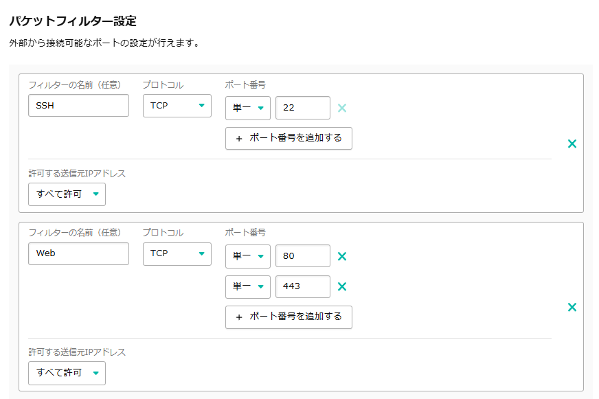

FastAPIで開発したWebアプリを、さくらVPS上に本番用サーバーとして構築し、独自ドメインとSSLで完全公開した
表題の通りですが、2日かけて「さくらVPS」で本ブログシステムを構築しました。
動機は、アプリケーションを簡単にデプロイできるRenderでのWebアプリ公開は先日行いましたが、もっと「インターネットっぽいことをしたい」と思ったからです。
なぜ「さくらVPS」なのか
初のデプロイではRenderという海外のサービスを使ったので、次は日本のものを使いたかったのと、費用を月額1000円以内に抑えたかったからです。途中で気が付いたことなのですが、Renderだと一つのサービスに一つのサーバーが必要でしたが、VPSは自分の設定次第で複数のサービスを登録できるので結果的に格安なのだと理解できました。
技術スタック
- Backend: FastAPI (Python)
- Database: PostgreSQL
- Infrastructure: さくらVPS / Nginx / systemd
デプロイまでの手順
- FastAPIを用いたローカル環境でのアプリケーション開発。
- さくらVPSの契約とOS（Ubuntu）のセットアップ。SSH接続やファイアウォールのセキュリティ設定。
- PostgreSQLのインストールと、アプリ専用のデータベース・ユーザー作成。
- GitHubリポジトリを作成し、サーバー（VPS）と連携してコードを反映。
- NginxとCertbotを用いた独自ドメイン（お名前.com）の設定およびSSL（HTTPS）化。
- systemdによるプロセスの永続化。サーバー再起動時の自動起動を有効化。
さくらVPSのパケットフィルター設定が便利だった
さくらVPSを確かに利用している様子です。

気をつけたこと
- GitHubに.envファイルをプッシュしてしまった際、
- 旧リポジトリを削除し、機密情報が履歴に残らないようにしました。
- DBのパスワードを新しいものに変更しました。
- 物理メモリの枯渇に備え、ストレージ上に2GBのスワップファイルを作成し、仮想メモリとして割り当てました。
- AIに作業手順を尋ねるとき、IPアドレスやパスワードなどは隠し、必要最低限の情報で実行しました。
はじめてサーバーを立てた感想。
最も思ったのは、「先人たちはどうやってこのような複雑なデプロイ作業をやってのけたのだ」ということです。今回私はGeminiに手順を確認しながらセットアップを進めましたが、それでも体力を使う作業でした。インターネット上に存在する無数のWEBサービスの尊さを感じました。
もう一つは、自分もインターネットを作る側（支える側）に来れた感動です。小学4年生のときに祖母の家で初めてインターネットを使いましたが、10数年越しにその画面の向かい側にいるような、不思議な感じです。YouTubeやXといったプラットフォームを使わずにそこに立てたことは、自分に大きな意味があります。
最後は、どこからが「自分でサーバーを立てた」と言えるのかという疑問です。今回、サーバの足回りを自前で構築したわけではありません。仮に、自分でハードウェアを所有していても、そのパーツは誰かが作ったもので、厳しく言えば自前ではありません。言語だって、誰かが開発したものを使っています。以上を考えると、SEとして生きていくには、物事を突き詰める能力と、良いところで納得する二つの能力が必要なのかもしれません。
まとめ
今回、サーバー構築に取り組み、知識が繋がりました。次はもっと動きのあるWEBアプリを作成し、サーバーの負荷を確認したいです。
最後まで読んでくださり、ありがとうございました。
この記事が役に立ったら、ぜひ「応援」をお願いします！